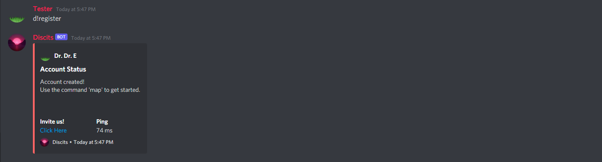
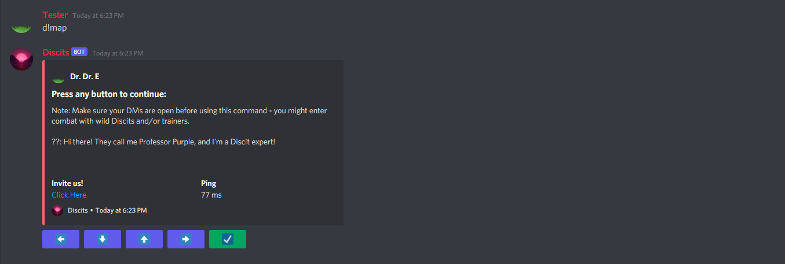
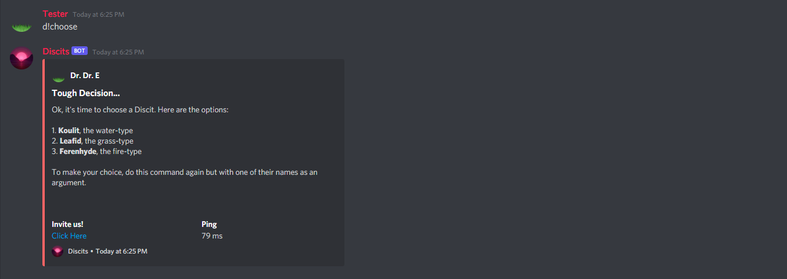
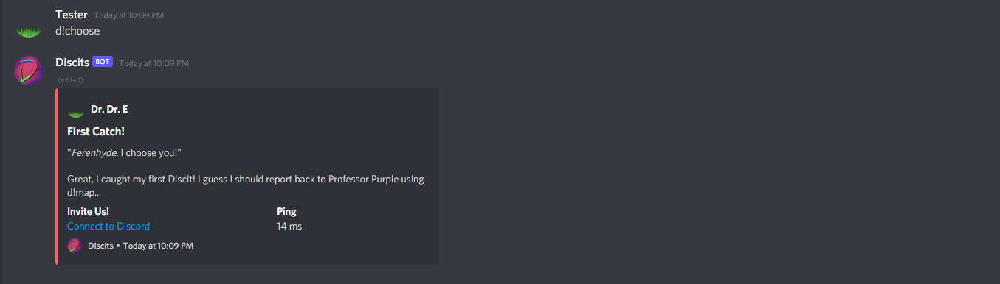
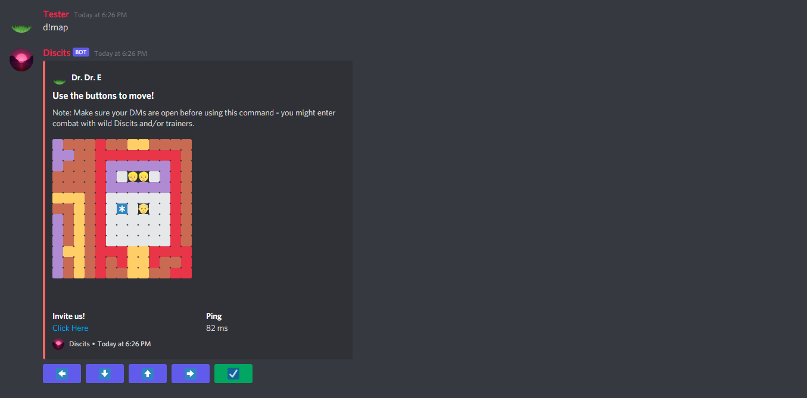
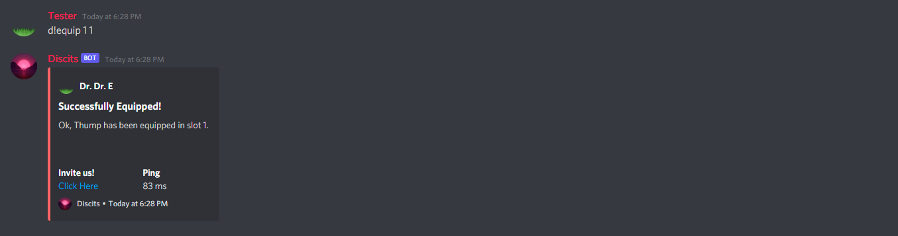

1. d!register to begin!
This command will set you up with an account. The prefix d! is used for all commands.
2. Use d!map to open up your map.
You'll be prompted to talk to the professor, who will introduce you to the game.
3. Use d!choose without any arguments.
This will show you your options for your starter Discit (there are three types offered).
4. When ready, use d!choose with your starter's name.
You're now set up with your first Discit. Make sure to capitalize the name!
5. Reenter your map using d!map.
Move in any direction, and talk to the professor again as your next step. Once you're done, use the check button to save your data.
6. Next, use d!select 1 to select your starter Discit.
You can try using d!list - this will show your starter at index 1.

7. Use d!equip 1 1 to equip your first attack in the first slot.
You can also use d!allmoves to check out a list of all moves you can learn on your starter.
8. Use d!party 1 1 to party your first Discit into the first slot.
If you use d!party with no arguments, it'll print out your current party (hopefully with your starter in it).
9. Reenter your map again using d!map.
Move towards the exit, where you can talk to the professor for the last time.

10. You're done with the tutorial!
Make your way towards Route 1 and begin your journey as a Discit Trainer!